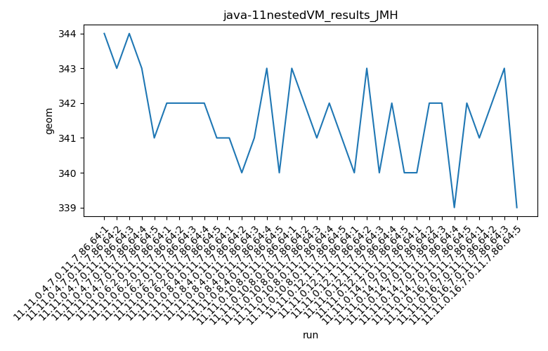
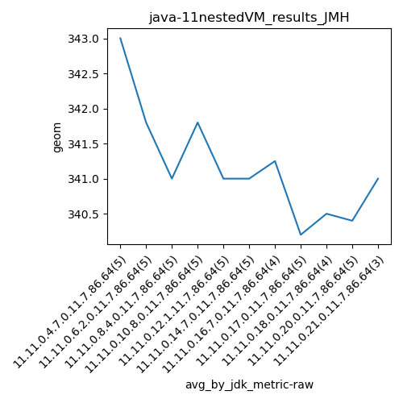
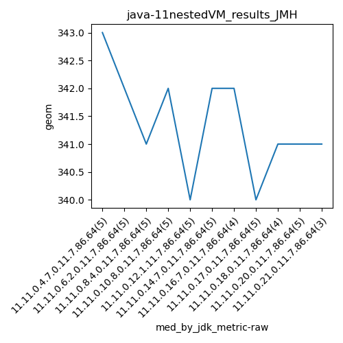

java-11 JMH
Context at bottom
/home/jvanek/git/benchmarks-in-nested-virtualisation-toolchain/final_results/nestedVM_results/nestedVM_results_J2DBENCH
java-11
JMH
/home/jvanek/git/benchmarks-in-nested-virtualisation-toolchain/final_results/nestedVM_results/nestedVM_results_RADARGUNs3
java-11
JMH
/home/jvanek/git/benchmarks-in-nested-virtualisation-toolchain/final_results/nestedVM_results/nestedVM_results_DACAPO
java-11
JMH
/home/jvanek/git/benchmarks-in-nested-virtualisation-toolchain/final_results/nestedVM_results/nestedVM_results_JMH
java-11
JMH
nestedVM_results_JMH
final score
Expected number of java-11 JDKs: 11
1st avgmed_alljdks_metric:
/home/jvanek/git/benchmarks-in-nested-virtualisation-toolchain/final_results/result_processing.py /home/jvanek/git/benchmarks-in-nested-virtualisation-toolchain/final_results/nestedVM_results/nestedVM_results_JMH geom False
values: [344, 343, 344, 343, 341, 342, 342, 342, 342, 341, 341, 340, 341, 343, 340, 343, 342, 341, 342, 341, 340, 343, 340, 342, 340, 340, 342, 342, 339, 342, 341, 342, 343, 339, 342, 339, 340, 341, 339, 342, 341, 339, 340, 341, 339, 341, 341, 340, 341, 341, 341]

Expected number of iterations: 5
final number of values: 51 out of 55
Pass rate: 92.7%
values: (339, 344, 341.19607843137254, 341)

** accuracy from all jdks and runs
more is better
MIN: 339
MAX: 344
AVG: 341.19607843137254
MED: 341
Relative differences 1:
MIN-MAX: 1.0 %
MIN-AVG: 1.0 %
MIN-MED: 1.0 %
MAX-MIN: -1.0 %
MAX-AVG: -1.0 %
MAX-MED: -1.0 %
AVG-MED: -0.0 %
stored to java-11.properties. sort | uniq that!
2nd avgmed_by_jdk_metric:
values: [343.0, 341.8, 341.0, 341.8, 341.0, 341.0, 341.25, 340.2, 340.5, 340.4, 341.0]

values: [343, 342, 341, 342, 340, 342, 342, 340, 341, 341, 341]

values: (340.2, 343.0, 341.17727272727274, 341.0)
values: (340, 343, 341.3636363636364, 341)

** accuracy from all jdks where runs were avged
more is better
MIN: 340.2
MAX: 343.0
AVG: 341.17727272727274
MED: 341.0
Relative differences 1:
MIN-MAX: 1.0 %
MIN-AVG: 0.0 %
MIN-MED: 0.0 %
MAX-MIN: -1.0 %
MAX-AVG: -1.0 %
MAX-MED: -1.0 %
AVG-MED: -0.0 %
stored to java-11.properties. sort | uniq that!
** accuracy from all jdks where runs were medianed
more is better
MIN: 340
MAX: 343
AVG: 341.3636363636364
MED: 341
Relative differences 1:
MIN-MAX: 1.0 %
MIN-AVG: 0.0 %
MIN-MED: 0.0 %
MAX-MIN: -1.0 %
MAX-AVG: -0.0 %
MAX-MED: -1.0 %
AVG-MED: -0.0 %
stored to java-11.properties. sort | uniq that!
/home/jvanek/git/benchmarks-in-nested-virtualisation-toolchain/final_results/nestedVM_results/nestedVM_results_SPECJBB
java-11
JMH
/home/jvanek/git/benchmarks-in-nested-virtualisation-toolchain/final_results/nestedVM_results/nestedVM_results_RADARGUNs1
java-11
JMH
pass rates:
nestedVM_results_JMH=92.7%
Context:
- nestedVM_results
- JMH